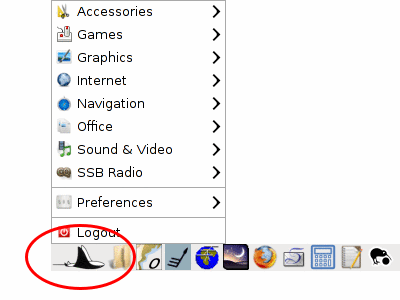
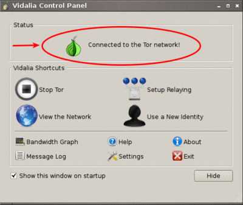
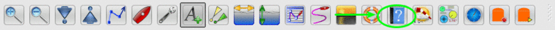
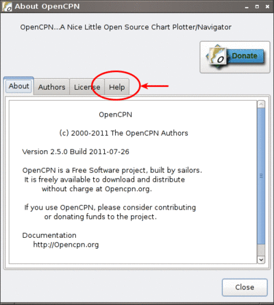

Navigatrix comes pre-configured with a comprehensive set of applications for almost anything one could want to do on a boat with a computer: navigation, communication, word processing and spread-sheeting, photos and graphics, sound and video, ... - you name it. This section provides an overview of the applications that can be found under the “Manta Menu” in the bottom left of the Navigatrix desktop.

Where available, the text below will provide a link to the applications online documentation and/or project website for further information.
Accessories
Archiver: Compress and decompress data with Xarchiver. Offline help under /usr/share/doc/xarchiver/html/index.html (will be opened in Firefox when selecting “Contents” from the help menu.) URL: xarchiver.sourceforge.net/
Disk Encrypter: Disk Encryption with TrueCrypt. An excellent cross-platform utility to store encrypted files on a physical or virtual disk. Good PDF user guide available locally by selecting “User's Guide” from the Help menu. The Help menu also contains web-links to a beginner's tutorial, FAQs and online documentation. There is a thread on the Navigatrix Support Discussion Board on how to create a fully encrypted bootable USB stick with Navigatrix. URL: www.truecrypt.org/
File Copier: Manage files with two panels side by side using Double Commander. Handy utility for copying and moving files around the file system. Also good for renaming multiple files in one go without command line acrobatics, comparing the contents of directories and many other basic tasks. URL: doublecmd.sourceforge.net
File Manager: Browse the file system and manage the files with PCManFM. Similar to the Windows file manager. Default configuration will delete files permanently after confirming (no trash bin). You can change this in the File Manager's menu under Edit -> Preferences by checking “Move deleted files to trash bin”. To toggle displaying hidden files on/off you can use the keyboard shortcut: [ctrl]+[H]. Under Unix, hidden files start with a “.” and are primarily used for configuration files and internal housekeeping. Usually you don’t want to see them to avoid clutter but sometimes you’ll need to get to one. URL: pcmanfm.sourceforge.net
Password Storage: Store your password safely with KeePassX. This is the Unix version of the KeePass password manager that is available for Windows. The Unix version supports automated login into applications and websites. See the “User Guide” available offline under the application's help menu. URL: www.keepassx.org
System Profiler and Benchmark: Only developer documentation available online. Application should be self-explanatory though. URL: wiki.hardinfo.org/Documentation
Terminal Emulator: Use the command line with LXTerminal. Can also be invoked anytime by pressing [ctrl]+[alt]+[T] key simultaneously. From the File Manager's Tool menu you can also open a terminal window in the File Manager's current directory (in File Manager: Tools -> Open current folder in terminal - pressing [F4] in File Manager does the same). URL: lxde.org
Virtual Keyboard: Use your mouse as a keyboard with onboard.
World Clock: See the time in other timezones with gworldclock.
Games
Go: Play the oldest board game of the world with qGo. Extensive offline documentation for this game can be accessed by typing file:///usr/share/doc/gnugo/html/index.html in the address bar of your web browser.
Mahjongg: Disassemble a pile of tiles by removing matching pairs.
Sudoku: Test your logic skills in this number grid puzzle.
Graphics
Chart Converter: Convert images to kap charts and calibrate them. The menu entry invokes the shell script makekap under /usr/local/bin. This script first asks for an image file to be calibrated, converts it to “chart.png” under /home/<user>/Desktop and then launches the Windows program SeaClear for the user to perform the geo-referencing. The user then saves the calibration (as /home/<user>/Desktop/CHARTCAL.DIR). Upon the user exiting SeaClear the script calls the tif2bsb utility to create a *.kap chart file from the original image plus the calibration data. The chart can be loaded into OpenCPN. Sounds complicated but it is in fact pretty straight forward and the makekap script displays messages and instructions along the way. There is also a helpful entry on the Navigatrix Support Discussion Board.
Image Manipulator: Create images and edit photographs with Gimp. Powerful open source image editing at the same level as PhotoShop. Extensive offline documentation available under the application’s Help-menu. URL: www.gimp.org
Painting Program: Create pixel art and manipulate digital photos with mtPaint. URL: mtpaint.sourceforge.net
Photo Manager: Organize your photos with Shotwell. This is a photo library similar to Picasa with some basic image touch-up functions as well. URL: www.yorba.org/shotwell
Internet
EMail Client: EMail client Sylpheed. Fast and light-weight email client. Documentation is available offline under the Help-menu. Helpful posts on the Navigatrix Support Discussion Board (browser-email integration): (1) and (2) URL: sylpheed.sraoss.jp/en/
File Transfer: Download and upload files via FTP using FileZilla. URL: filezilla-project.org
Messenger: Chat over IM. Supports AIM, Google Talk, Jabber/XMPP, MSN, Yahoo and more with Pidgin. URL: pidgin.im
Planet Viewer: Explore, search and discover the planet with Google Earth. URL: earth.google.com
Relay Chat: Chat with other people using Internet Relay Chat and XChat.
Remote Access: Share your desktop using a VNC server. You could for example run OpenCPN below decks and repeat the desktop image to another display/tablet on deck via a wifi link.
Remote Access Viewer: Connect to a remote desktop using a VNC Viewer. The client side counter part to the “Remote Access” VNC server above.
Satellite Connection: Connect to the Internet using a satellite phone. This menu item invokes the shell script /usr/local/bin/satphone which calls another script (comports in same directory) to link usb2serial ports and then calls the wvdial PPP dialer utility.
Skype: Internet Telephony with Skype.
Tor Proxy: Browse Anonymously over the Tor Network with Vidalia. This is a tool to bypass restrictions on wifi (or cable) networks that block critical information and block downloads based on filename extensions. You start Vidalia (Manta Menu -> Internet -> Tor Proxy) and wait until the window that pops up shows that you are connected to the Tor network.

Then, in the Firefox web browser, click on the little onion with the red “X” in the upper right (next to the search box) and select “Toggle Tor Status” which should make the little onion turn green.
Torrent Client: Download and share files over BitTorrent with Transmission. URL: www.transmissionbt.com
Web Browser: Browse the World Wide Web with Firefox. Navigatrix has Firefox pre-configured with some useful add-ons (in addition to the Tor “anonymous browsing” utility mentioned above). One is ScrapBook, a utility that lets you download webpages, and store and organize them in a library for later offline reading. Scrapbook also allows to make annotations to downloaded pages. It can be accessed under the ScrapBook menu in Firefox. You can display a list of your downloaded pages by pressing [alt]+[K] in Firefox. The other helpful add-on is “DownThemAll!”, a download manager that - amongst other things - allows you to download multiple links from a webpage. DownThemAll! is available in the context menu in Firefox whenever you right-click on a link. It can be configured under Tools -> DownThemAll! Tools in Firefox.
XGate: A high-performance e-mail satellite program for satellite phones. Requires an account with Global Marine Networks which can be set up through the application. There is a free 3 day demo trial available.
To configure XGate to work with the Sylpheed email client that is part of Navigatrix follow these steps:
Start Manta->Internet->XGate and setup for your Satellite Phone.
Goto XGate->Options->Settings->EMail Settings and choose the Option Selected mail application within Preferred Mail Client.
Enter Appcation Path /usr/bin/sylpheed and click "Ok".
Start Manta->Internet->EMail Client and click on Configuration->Create new account.
Select "POP3" and enter your name and email address (e.g. name@ocens.net), click "Forward".
Enter your Ocens "User ID". Afterwards POP3 Server "127.0.0.1" and SMTP Server "127.0.0.1". Leave all check boxes unmarked. Click "Forward" and then "Close".
Now go to Configuration->Edit accounts choose your newly created account and click "Edit".
In tab "Basic" enter the password for your Ocens account into the "Password" field.
In tab "Advanced" mark "Specify SMTP port" and enter "2500". Also mark "Specify POP3 port" and enter "1100".
Thats it! All done and ready to go. When you compose an new email make sure you select your Ocens email in the "From" Field. After sending the email within Sylpheed you have to click on "Start" within XGate. And of course...XGate has to be running when you send an email through Ocens within Sylpheed.
Navigation
Celestial Navigation for cruisers: electronic almanac and sight reduction. See application's Help menu for details. Addtional info available in the Quorum section of the Navigatrix discussion board.
GPS Converter: A graphical front end to GPS Babel, a pretty universal converter between GPS data files in different formats (e.g. OpenCPN's GPX format to/from native GPS formats such as various Garmin flavors). The GUI should be self-explanatory; detailed help on the underlying GPS Babel program is available locally under file:////usr/share/doc/gpsbabel/htmldoc/index.html.
GPS Panel: Large GPS Instruments Panel using Matrix Mariner GPS.
GPS Satellites: Monitor your GPS with XGPS. This is a graphical interface to the gpsd daemon described in “GPS and Navigatrix”.
Grib Files: View and Download Grib Files with zyGrib. URL: www.zygrib.org
Grid Calculator: Distance and bearing calculation with QGrid.
Instrument Panel: Instrument Panel PolarCOM.
Navigation Console: Comprehensive collection of navigation tools including planetarium, star finder, lunar distance clearing, sight reduction, nautical almanac pages, real time almanac and tides. More info at The Navigation Desktop Project and the developer's website.
Nautical Alamanac: Nautical alamanc data and sight reduction with Nautic.
OpenCPN: Navigate with OpenCPN. There is extensive offline documentation available by clicking on the “?” symbol in the OpenCPN toolbar and then on the “Help" tab in the “About OpenCPN Window”.


This will open the local file /usr/local/share/opencpn/doc/help_en_US.html in Firefox (it may take a while for Firefox to display the page). URL: Opencpn.org
Polar Smoother: View, edit and smooth polar data for your boat. Comes with a selection of sample polar data files for different boats which you can use as a starting point/approximation if you don't have polar data for your boat. Look under /opt/WeatherWizard/all-scripts/polars/polars.
Sailboat Router: Routing software for virtual and real sailboats. This is the qtVlm application that was originally developed as the user front end for the “Virtual Loup de Mer” on-line sailing race. Feed it with a GRIB wind forecast and polar data for your boat speed at varying wind speeds and angles, and it will calculate the (theoretically) optimal (fastest) routing to your sailing destination. Set up your own boat in the application under Boat -> Account Management by adding a new boat and setting the type of boat to “Real Boat” rather than “VLM Boat”. Define the polar data for your boat under Boat -> Boat's settings. You can tweak one of the availabel polar data files to fit your boat (these are simple csv files - look in /opt/qtVlm/polar). There is extensive help and documentation available at the Virtual Loup de Mer website, including specific info about the application.
Tidal Calculator (legacy): Calculate worldwide tides with WXTide. A Windows program which Navigatrix runs under Wine. Has been superseded by the “Tidal Calculator” above in the latest version of Navigatrix but is still available as “legacy”. URL: wxtide32.com
Tidal Calculator (USA): View USA tidal and current predictions with XTide.
Weather Wizzard: Superimpose weather fax and GRIB data to check for tropical phenomenae. Documentation and examples available at The Weather Wizzard Project.
Office
Calculator: Perform simple and scientific calculations. Can even be switched to RPN mode under Calculator -> Notation Modes.
Electronic Library: E-book library management: Convert, view, share, catalogue all your e-books with Calibre. URL: manual.calibre-ebook.com
Spreadsheet: Calculation, Analysis, and Visualization of Information with Gnumeric. Gnumeric can read and save MS Excel and Open Office formats. While it’s not as feature-rich as Excel, its data analysis capabilities are on par and it is very nimble and fast. URL: www.gnumeric.org
Sticky Notes: Jot down notes for later on post-it type pads that you can put on your desktop.
Text Editor: Edit text files with medit. This is the more powerful one of the two text editors available in Naviagtrix. medit knows different high-lighting modes (for various programming and mark-up languages, e.g. XML and HTML), can do spell checking, and can be extended via external tools. The full manual for medit is available under the application's Help menu. The other editor that comes with Navigatrix is Leafpad - no frills but lightning quick. Leafpad is not accessible through the Manta Menu but by default a double-click on a text document in the File Manager will open it in Leafpad. URL: mooedit.sourceforge.net
Wikipedia: Read wikipedia offline with Kiwix. A great tool if you’re in places where the internet is not as ubiquitous. Kiwix is the reader application. To get wikipedia content you’ll have download one of the data files (“ZIM files”) available at the Kiwix website. These files contain compressed wikipedia content and are available in several languages. An English version with a selection of 45,000 articles (pulled from wikipedia in December 2010) is about 3.7 GB to download. An English version with all wikipedia articles as of January 2012 (but without pictures) is 10 GB to download. Keep in mind though, that USB sticks and SD cards typically don't allow individual files to exceed 4GB. Hence the 10 GB version will only work from a harddisk. URL: www.kiwix.org
Word Processor: Compose, edit, and view documents with AbiWord. AbiWord can read and save MS Word and Open Document formats (and many more). URL: www.abisource.com
Sound and Video
Music Player: Listen to music with Audacious.
Video Player: Play your Videos with MPlayer.
Webcam Application: Use your webcam with wxCam.
SSB Radio
Airmail: Check you SSB eMails with Airmail. This is the Windows application running under Wine (see “Installing Windows Applications”). You configure and use the program in the same way as you do under Windows. Navigatrix also keeps your position data in Airmail updated with your GPS position (see “GPS and Navigatrix”). If you use Airmail with a Pactor modem via USB or Bluetooth Navigatrix will automatically configure the required com ports. For this to work you need to power on your modem while it is connected to your computer but before you start Airmail. If you’re new to Airmail: There is a good introduction and “how-to” guide available from the Sailmail website at http://www.sailmail.com/smprimer.htm.
Note: Some early versions of Navigatrix version 0.5 had a small error in the script that handled the automatic com port set-up. If you experience trouble with the automatic com port configuration in Airmail please check this post in the Navigatrix Support Discussion Base.
Data Transfer: Amateur Radio Data Transfer with ARQ and flARQ.
Digital Modem (fldigi): Amateur Radio Sound Card Communications flDigi.
Fax Reciever: Recieve radio facsimiles with JWX.
Fax Reciever/Sender: Transmit and recieve radio facsimiles with HamFax.
Morse Decoder: Decode Morse Code with xdemorse.
Navtex Reciever: Recieve Navtex Weather Data with JNX.
PSKMail: Transmit and recieve eMail over SSB with jPSKMail.
Radio Terminal: Use MFSK, RTTY, THROB, PSK31, MT63 and Hellschreiber modulations with gmfsk.
Slow TV/FAX: Transmit and receive slow-scan tv and radio facsimiles with QSSTV.
Preferences
Think "Windows Control Panel". These little utilities should be largely self explanatory.
Advertising Blocker: Blocks advertisings on websites.
Appearance Settings: Customize the look of the desktop.
Bluetooth Manager: Blueman Bluetooth Manager.
Calibrate Touchscreen: Run the calibration tool for touchscreens.
Configuration Manager: Configure and personalize the Openbox window manager.
Disk Utility: Manage Drives and Media.
Firewall Configuration: Allows you to configure ufw firewall.
Keyboard and Mouse: Configure keyboard, mouse and other input devices.
Keyboard Layout: Select your keyboard layout.
Language Support: Configure multiple and native language support on your system. See this post on the Navigatrix Support Discussion Board for help on how to change the default language setting for the system.
Monitor Settings: Change screen resolution and configure external monitors.
Network Connections: Manage and change network connection settings.
Online Accounts: Online account credentials and settings.
Package Manager: Install, remove and upgrade software packages with Synaptic. See the section about Installing Additional Software for more information and an example of installing an application with the Synaptic Package Manager. In addition, offline documentation can be accessed by typing file:///usr/share/synaptic/html/index.html in the address bar of your web browser.
Partition Editor: Create, reorganize, and delete partitions with GParted.
Power Manager Settings: Settings for the Power Manager.
Printer Configuration: Configure printers.
Software Center: Catalogue of publicly available software for your system.